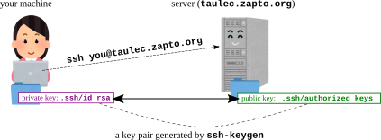

Jupyter環境の使い方
ログイン
UTOL
で当該授業のページに行く
課題一覧の中から, “課題0: Jupyter環境” の
「教員からのコメント」 を見る
(課題を提出する必要はない)
注: 上記課題が見えない人は,
UTOLの「コースを登録」 ボタンで受講登録する
(参考:
UTOL学生向け利用マニュアル
p28 )
注: UTOL上で受講登録しても履修登録したことにはなりません.
履修することにした場合,
UTAS
から履修登録してください.
「教員からのコメント」に「https://xxxx.xxxx.xxxx:xxxx/
にアクセスし, UTokyo Google Account (ECCS) でサインインしてください.
ユーザ名は u2xxxx です.」のようなメッセージが書かれているのを見る.
書かれているURLにアクセスし, 「Sign in with Google
(ECCS)」 を押して, UTokyo Google Account (ECCS)
(xxxx@g.ecc.u-tokyo.ac.jp のようなアドレス)
でサインインする.
サインイン後, ブラウザのアドレスバーを見て,
https://xxxx.xxxx.xxxx:xxxx/user/u2xxxx/lab
のような,
自分に割り当てられたユーザ名と一致するURLになっていることを確認する.
403: Forbidden: cannot assign local user for
xxxx@g.ecc.u-tokyo.ac.jp というエラーが表示された場合,
あなたのアカウントはまだ準備できていません.
UTOLで受講登録したことを確認し (上記参照),
待っている旨を教員に伝えてください.
注: 以下の動画は昔に UTokyo Account (UTokyo Google
Accountではなく) でサインインしていたときのものなので,
選ぶボタンとその後の画面遷移が現在とは少し違いますが参考のため残します.
それ以外の手順は同じです.VIDEO
Nbgraderの使い方
課題の取得 (fetch)
課題や演習用のファイルを配布するのに Nbgrader を使う.
Jupyterにサインインしたら, 上部メニューから
Nbgrader -> Assignment
List を選択. このようなページが現れる.
配布物がある場合, ページ上部に配布物の名前と
Fetch というボタンが現れるので,
ボタンを押して入手
▶ をクリックすると配布されたファイルが現れるので, notebook
(.ipynb で終わるファイル) をクリックして開く.
あとはnotebookに書かれている指示に従って作業をする.VIDEO
注意:
既存のセルをコピーしない こと
一部のセルは解答記入, 採点対象のセルになっている.
そのようなセルを複製 (コピーペースト) するとnotebookが壊れて,
採点できなくなる.
配布されたnotebookにないセルが必要な場合は,
既存のセルをコピーするのではなく, 新しいセルを作ること (a
で上に作成, b で下に作成, など).
NotebookのValidate
notebookを開いているページの上部にある
Validate ボタン, または
Assignment List ページ中の
Validate ボタンを押すと, 以下がチェックされる.
notebookが壊れていない (解答記入用のセルが複製されていない) か
解答セル中にわずかでも変更が施されているか
Notebookをsubmitする前にvalidateをして,
notebookが壊れていないことを確認せよ.
注: Validate
機能は常に正しく動作するとは限らない.
使うべきか無視してよいかは教員に確認すること.VIDEO
課題の提出 (submit)
Jupyter notebookでの作業を提出するには, メニューの
Nbgrader -> Assignment
List から Submit
ボタンでsubmitする.
自習用で採点対象でないnotebookもある.
そのようなnotebookは提出する必要はない.
採点対象の課題は, 必ず UTOLの課題
として明示的に告知される. そのような課題については, 必ず以下を行うこと.
Jupyter上でsubmitする
UTOL上で対応する課題に対して,
Jupyter上で提出したことを報告するだけの送信を行う
作業内容そのものはJupyter経由で提出される.VIDEO
(任意) Jupyter
notebookの基本
この授業でJupyter notebookを使いこなせるようになる必要はない. 主に,
配布されたnotebookの既存のセルを修正・実行する作業になる.
とはいえ, いくつかの基本を知っておくと快適に作業できる.
新しいnotebookの作成 : 「Launcher」タブ
(タブバーの + ) を開き,
適切なボタンをクリックする.
Python notebook
Jupyter環境で最も一般的な種類のnotebook.
Launcherタブで, Notebookセクションの 「Python 3
(ipykernel)」 をクリックする.
notebook内での操作 :
新しいnotebookには, 最初にコードセルが1つある.
セル内をクリックすると編集できる
(編集モード
Esc を押す (またはセルの外をクリックする)
と編集を終了する (コマンドモード セルには code ,
markdown , raw の3種類がある. この授業では code
と markdown のみを使う.
セルの種類はタブ上部のツールバーで変更できる.
コードセルでは:
Pythonのコードを書く. SHIFT + ENTER で実行する.
%% 特に, %%bash
markdownセルでは:
文章を書く. SHIFT + ENTER で表示 (レンダリング) される.
コマンドモードでは:
a b dd その他のショートカットはメインメニューで確認できる.
notebookの名前を変更するには, タブを右クリックする.
notebookを削除するには, 左ペインのファイルブラウザを開き,
ファイルを右クリックして「Delete」を選ぶ.
Bash notebook
シェルコマンドを実行するためのnotebook.
コードセルには, Pythonのコードではなくシェルコマンドを書く.
それ以外はPython notebookとほぼ同じ.
Python notebookでも %%bash
でシェルコマンドを実行できるが, 重要な違いとして, %%bash
セルはそれぞれ別の (新しい) シェルで実行される. そのため, シェルの状態
(カレントディレクトリや環境変数など) はセル間で引き継がれない.
一方, Bash
notebookはセッション全体を通じて単一のシェルとやりとりするため, Jupyter
notebookの記録・文書化機能を持ちつつ,
従来のコマンドライン環境に近い動作をする.
ターミナル
シェルコマンドを実行できるターミナル.
Launcherタブで, Otherセクションの「Terminal」をクリックする.
通常のコマンドライン環境であり, notebookは作成されない.
おかしなことになったら …
Jupyterでは物事が思う通りに動かないことがよくあるので,
脱出・回避方法を覚えておくと良い.
比較的穏やかなリセット方法:
上部のメニューから Kernel ->
Restart Kernel (または
Restart Kernel and Clear Output ) を選択
すべてがダメなときのリセット方法:
上部のメニューから File ->
Hub Control Panel を選択.
Stop My Server を押して,
Start My Server を押す.
また, こまめに Ctrl-S を押してnotebookを保存すること.
notebookはときどき自動保存されるが,
それに頼るべきではない.VIDEO
課題をfetchし直して始めからやり直したい …
Notebookを破壊してしまったとか,
何か訳あって課題をfetchし直して初期状態からやり直したい場合は,
fetchし直したい課題のフォルダをまるごと削除 (… は危険なので名前を変更)
して, 上記の おかしなことになったら
…
の「すべてがダメなときのリセット方法」に従ってJupyterサーバを再起動してください.
詳しい手順:
左ペインからフォルダアイコンを選び, 「notebooks」を表示
(課題フォルダ一覧が表示されるはず)
やり直したい課題のフォルダを右クリック -> Rename
して適当な名前に変更 (e.g., pl00_intro ->
pl00_intro_xxx)
開いているファイルを含むディレクトリの名前を変更するとサーバが混乱することがあるので,
おかしなことになったら …
の「すべてがダメなときのリセット方法」を行う.
メニューから Nbgrader ->
Assignment List を表示すると,
課題が再びFetch可能になっているはずなのでFetchする
適宜, 元フォルダの作業内容を新しくfetchしたファイルに移植する (逆に,
新しくfetchしたフォルダをrename, 古いフォルダの名前を元に戻す,
新しくfetchしたフォルダから直したいファイルだけをコピーする,
という方法も考えられる)VIDEO
注: 当然上記の作業は端末 (SSH, Jupyter terminal)
経由で行うことも可能. その場合の例:
cd ~/notebooks/
mv pl00_intro pl00_intro_xxx
# Stop My Server -> Start My Server
# 再fetch
# 必要な作業を移植 Jupyter (webブラウザ)
じゃなくて端末 (SSH) で作業・編集したい …
Jupyterは説明やサンプルプログラムを与え,
それを小規模に編集する環境としては良い.
しかし,
プログラムを書いたり編集したりする環境としては理想的ではない.
普段使っているVSCode, Vim,
Emacsなどを使いたいという向きもいることだろう.
それにはまずSSHを使ってリモートログインできるようになる必要がある.
SSHを使ってリモートログインできるようになるためには,
公開鍵認証というものを使って認証するため,
以下のような状態を作る必要がある. すなわち
SSHの秘密鍵が自分のマシンに .ssh/id_ed25519
のような名前で,
SSHの公開鍵がJupyterサーバに .ssh/authorized_keys
という名前で
保存されている状態.
秘密鍵のファイル名 (id_ed25519)
は使われている暗号方式によって異なる可能性があり, 他には id_rsa,
id_dsa などがある
秘密鍵, 公開鍵は, 持っていなければ 自分のマシン上で 生成し,
その中の公開鍵をJupyterサーバにアップロードする
SSHを使ってリモートログインできるようになるための手順
せっかちな人のための動画
以下の動画で,
この後に説明する手順を一通り説明しているVIDEO
SSH鍵ペアの準備
この手順は 自分のコンピュータ上で
自分のホームフォルダの下に, ~/.ssh/id_ed25519 と
~/.ssh/id_ed25519.pub (または id_rsa,
id_rsa.pub など) というファイルがあれば,
すでに鍵ペアを持っているのでここはスキップして良い
その確かめ方:
自分のコンピュータでコマンドライン端末を開き以下を実行
your_computer$ cd ~/.ssh/
your_computer$ ls
id_ed25519 id_ed25519.pub
注: Windowsの場合, 普通のコマンドプロンプト (cmd) ではなく,
powershellをお勧めする
(lsというコマンドはpowershellで使えるがcmdでは使えない)
上記二つのファイル (他にもあるかも知れないが) が表示されれば,
あるということ.
id_ed25519
が秘密鍵 ,id_ed25519.pub (.pub で終わる)
が公開鍵
鍵ペアを持っていなければ以下のコマンドで作る
your_computer$ ssh-keygen
なおこのコマンドは上記のファイルが存在していれば上書きするかどうかを聞いてくる.
その場合は上書きしない ほうが良い
公開鍵のJupyterサーバへのアップロード
鍵ペアが用意できたら,
次に公開鍵をJupyterサーバにアップロードする
Jupyterlabの左側のファイル一覧でホームディレクトリが表示されている状態
(notebooks フォルダが一覧に表示されている状態) にして,
Jupyterのメニュー直下のUpload Filesアイコン
をクリックし, 公開鍵ファイル (id_ed25519.pub
など) をアップロードする. これでサーバのホームディレクトリの下に
id_ed25519.pub というファイルができる
Jupyterサーバ上で以下を実行 (~/id_ed25519.pub
の部分はアップロードしたファイルの名に合わせて適宜変更)
それには Bash notebook や, Python
notebookの %%bash セルを使うと良い
mkdir -p ~/.ssh/
cp ~/id_ed25519.pub ~/.ssh/authorized_keys
chmod 700 ~/.ssh
chmod 600 ~/.ssh/authorized_keysls -ld ~/.ssh
ls -l ~/.ssh/authorized_keys
cat ~/.ssh/authorized_keysdrwx------ 2 u2xxxx u2xxxx 4096 Oct 4 22:19 /home/u2xxxx/.ssh
-rw------- 1 u2xxxx u2xxxx 394 Oct 4 22:19 /home/u2xxxx/.ssh/authorized_keys
ssh-ed25519 AAAAB3NzaC1yc2EAAAADAQABAAABAQC9s/2Uiy187pQvMNVwlNMRTSNFnvj9EVwOPx9/qLuiQg086zXFB2eugxTL1Pw+ViQ ... ... uB/TiOnA0e6KDpU2h4
ポイントは drwx------ -rw-------
のところと最後の文字列 ssh-ed25519 AAAAB3Nza ... の雰囲気.
最後に以下のような文字列が表示されたらそれは鍵の形式が違う.
以下は鍵の形式違いです
=== BEGIN SSH2 PUBLIC KEY ===
gakjjkgdslkjgkljkjdakjdakljdkff
tuireuproeqiutreiurewuriouoweu0
...
=== END SSH2 PUBLIC KEY ===
SSHログインできることを確認
your_computer$ ssh u2xxxxx@server_name
u2xxxx の部分は Jupyter環境での
自分のユーザ名. UTokyo Google Account (ECCS) とは 異なる
ので注意.server_name の部分はURLのホスト名部分 (例:
JupyterのURLが https://abc.def.org:8000/ なら
abc.def.org)Jupyter環境での自分のユーザ名を知るには,
Jupyterサーバ上で以下を実行
whoami
うまく行くと, サーバのコマンドプロンプトが現れるはずである.
your_computer$ ssh u2xxxx@server_name
Welcome to Ubuntu 20.04.3 LTS (GNU/Linux 4.15.0-1054-aws x86_64)
* Documentation: https://help.ubuntu.com
...
Last login: Sun Dec 15 16:29:26 2019 from 111.99.149.67
$
これで, 端末内で動くエディタ (emacs, vim, nano, etc.)
であれば何でも利用可能.
課題の一部として配布されるファイルはすべてホームディレクトリ直下の
notebooks 内にある
VSCodeはGUIを要するため話が別で, 以下で説明する
VSCode Remote拡張機能の利用
VSCodeを使うと,
Jupyter環境にfetchしたリモートのファイルを編集できる
まず, JupyterサーバにSSHでログインできることを確認すること